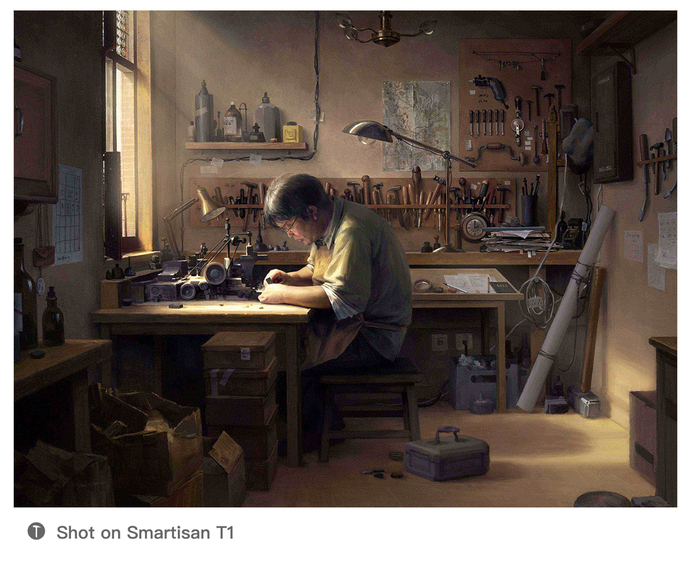

<!DOCTYPE html>
<html lang="zh" dir="ltr">

<head>
    <meta charset="utf-8">
    <meta name="viewport" content="width=device-width, initial-scale=1.0, maximum-scale=1.0, minimum-scale=1.0, user-scalable=no">
    <title>Smartisan Watermark</title>
    <link href="favicon.ico" rel="shortcut icon">
    <link href="./css/materialize.min.css" rel="stylesheet">
    <link href="./css/style.css" rel="stylesheet">
</head>

<body>

</body>
<div class="form-wrapper row">
    <form id="form" action="#" class="form col l3 m8 s11">
        <div class="card">
            <div class="card-image">
                
            </div>
            </div>
            <div class="file-field input-field">
                <div class="update btn update-btn">
                    <div id="icons-btn" class="file-icon-wrapper">
                        <div class="preloader-wrapper active">
                            <div class="spinner-layer">
                                <div class="circle-clipper left">
                                    <div class="circle"></div>
                                </div>
                                <div class="gap-patch">
                                    <div class="circle"></div>
                                </div>
                                <div class="circle-clipper right">
                                    <div class="circle"></div>
                                </div>
                            </div>
                        </div>
                        <i class="material-icons">photo_size_select_actual</i>
                    </div>
                    <input id="upload-img" class="file" type="file">
            </div>
                    <div class="file-path-wrapper">
                        <input class="file-path validate" type="text" placeholder="上传一张来自Smartisan相机的照片">
            </div>
                        <div class="file-download-wrapper">

                            <a id="download-btn" class="download btn waves-effect waves-light" disabled>
                                下载水印照片
                                <i class="material-icons">file_download</i>
                            </a>
                        </div>
                    </div>
    </form>
</div>
<script src="./js/materialize.min.js" charset="utf-8"></script>
<script src="./js/color-thief.min.js" charset="utf-8"></script>
<script src="./js/tinycolor.min.js" charset="utf-8"></script>
<script src="./js/exif.js" charset="utf-8"></script>
<script src="./js/main.js" charset="utf-8"></script>

</html>
